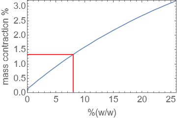

Chemical concentrations
Contents
1. Chemical concentrations#
This case study provides a demonstration of how technical definitions can be used to obtain measurement results. In some of the problems it can be quite challenging to balance the involved units or to accurately relate the given ratios to the physical scenarios.
The Sign of Four, Sir Arthur Conan Doyle, (1890)
“Which is it to-day,” I asked, “morphine or cocaine?”
He raised his eyes languidly from the old black-letter volume which he had opened.
“It is cocaine,” he said, “a seven-per-cent solution. Would you care to try it?”
1.1. Definition#
Concentration is a measure of the relative amount of one substance contained within a mixture. In this case study we consider a solute dissolved in a solvent to form a solution, such as glucose dissolved in water. The concentration is the ratio of either:
solute : solvent
solute : solution
The concentration of a solution can be expressed in various different ways, referring to either measurements of mass, volume, or number of elementary entities
1.2. Molar concentration (molarity)#
Biologists usually refer to concentrations using the non SI unit \(\text{M}\), which is referred to as molarity. This measurement gives the number of moles of solute that are present in a litre of solution and so it is given in mol/l.
To convert from a molar concentration (mol/l) to a mass concentration (g/l) we simply multiply the concentration by the molar mass of the solute. For instance, for a 1mM (millimole) solution of glucose we use the molar mass result for glucose, which is 180.16 g/mol:
Therefore we can determine (for example) how much glucose is required to prepare 10ml of solution:
The solution can then be made up to 10ml by adding solvent.
Although it is fairly straghtforward to determine mass concentration from molarity in this manner, it can be inconvenient, so lab recipe books often specify mass concentration (in mg/l or g/l) rather than molarity (mM or M).
Exercise 1.13
How much NaCL must we weigh out to prepare a solution with concentration 0.15M?
The relative molar mass of NaCl is 58.45g/mol and so the required amount is:
\((0.15\text{ mol/l})\times (58.45\text{ g/mol}) = 8.77\text{ g/l}\)
or 8.77mg/ml if you prefer
Exercise 1.14
Suppose we have cells or a tissue suspended in 10ml of buffer, and we want to add atropine, molar mass 289.37 g/mol, to achieve a concentration of 1nM. What mass of drug must be added?
\(\begin{alignat*}{2} 1\text{ nM}&=1\times 10^{-9}\text{ mol/l}=(1\times 10^{-9}\text{ mol/l})\times(289.37\text{ g/mol})\\ &=2.89\times 10^{-7}\text{ g/l}=2.89\times 10^{-7}\times 10^{-2}\text{ g/}10^{-2}\text{l}\\ &=2.89\text{ng/}10\text{ml}. \end{alignat*}\)
Practical note from Mathematics for Biological Scientists, p22:
2.89ng is not an easy amount to handle - it is probably too small to see on the end of a spatula, so we add the required amount of drug by pipetting a small quantity of concentrated stock solution into our final solution.
The smallest amount of stock that we can reliably pipette is 10\(\mu\)l. Pipetting this quantity into 10ml willl produce a 100-fold dilution. Thus, the concentration of atropine in the stock solution must be 1\(\mu\)M so that the final solution can be 1nM.
Preparing a 1\(\mu\)M solution is still problematic, so we would first prepare a stock at 1mM and dilute to 1nM.
1.3. Mass fraction#
The concentration of a solution may also be given as a mass fraction %(w/w), which is the solute mass as a percentage of the total solution mass.
To convert between molarity and mass fraction it is necessary to know the mass:volume relationship for the solution, which depends on both temperature and pressure. There is no simple way to obtain the density of a solution from known densities of the solute and solvent, since the volume of a solvent changes when it is in solution.
Values for the density as a function of mass fraction can be found in tables. For instance, for an aqueous solution of sodium chloride NaCl(aq), the following values are given at standard temperature and pressure in the CRC Handbook of Chemistry and Physics Online:
%(w/w) |
8.0 |
10.0 |
12.0 |
14.0 |
16.0 |
18.0 |
20.0 |
22.0 |
|---|---|---|---|---|---|---|---|---|
\(\rho\) kg/l |
1.0559 |
1.0707 |
1.0857 |
1.1008 |
1.1162 |
1.1319 |
1.1478 |
1.1640 |
The relationship between molarity \(c\) and the mass fraction \(r\) is given by
where \(\hat{x}\) is the molar mass of the solute in kg/mol. The numerator of this fraction is the mass of solute in a litre of solution. The denominator is the total mass of a litre of solution. We should check that the units balance:
\(c\hat{x}\) : (mol/l)\(\times\)(kg/mol) = kg/l
\(\rho\) : kg/l
The ratio of these two quantities is a pure number, as expected.
Exercise 1.15
Using the given table for the density of NaCl(aq) at standard temperature and pressure (STP), calculate the molarity of a 10.0% (w/w) solution.
Exercise 1.16
When sodium chloride is dissolved in water, there is a small contraction in the total volume of the solution. For a 8% (w/w) solution of NaCl(aq), estimate the size of the contraction as a percentage, given that the density of NaCl is approximately 2.17kg/l and the density of water is approximately 0.997kg/l.
Hint: The total mass of the solution is given by adding the mass of the solute and solvent, but the total volume does not follow a similar rule.
At 8% w/w, \(\rho=1.0559\text{ kg/l}\), so we may say that in a litre of solution:
where \(m\) is the mass of the solute and \(M\) is the mass of the solvent.
Furthermore at 8% w/w, \(m=0.08(m+M)\) and \(M=0.92(m+M)\). Thus, for a litre of solution the required volumes of solute and solvent are given respectively by:
The percentage change in volume in our one litre reference solution is given by
The result is approximately 1.33%. The graph below illustrates the volume contraction for different concentrations of NaCl(aq).
1.4. Molality#
Molality is the standardized measure of concentration (but not the most common!). It is defined in similar manner to the molarity, but uses mass of the solvent rather than the volume of the solution. The SI unit for concentation is therefore mol/kg referred to as the molality.
We can express a straightforward ratio between the % (w/w) and the molality as follows, where \(\hat{x}\) is the molar mass of the solute in kg/mol:
Explanation:
The mass:mass ratio of solute:solvent is given by \(r:(1-r)\). To convert the numerator to a measurement in moles we divide by the molar mass of the solute.
Exercise 1.17
Given that the molar mass of NaCl is 58.443, find the molality of an 8.0% (w/w) solution.
\(\hat{x}=58.443\times 10^{-3}=0.058443\)kg/mol.
\(b=\left(\frac{0.08}{1-0.08}\right)\left(\frac{1}{0.058443}\right)=1.488\)mol/l.
To convert between molarity and molality we need to know the density of the solution. For example, consider a 0.1500 M NaCl solution with density 1.0064 kg/l. The molar mass of NaCl is \(8.77\times 10^{-3}\text{ kg/l}\), and therefore the relative mass of the solvent is
Thus, the molarity is
Exercise 1.18
The molar mass of sucrose is 342.3 g/mol and the density of a 2.555M solution of sucrose is 1.2887 kg/l.
(a) What is the concentration of sucrose expressed as % (w/w)?
(b) What is the concentration expressed as molarity? (mol/kg)
\(2.555\text{M}=(2.555\text{ mol/l})(342.3\text{ g/mol})=874.577\text{ g/l}\)
Mass of solvent: \((1.2887-0.874)\text{ kg/l}=0.4141 \text{ kg/l}\)
(a) As % (w/w):
(b) As mol/kg:
1.5. Summary of measurements#
name | symbol | units | definition |
|---|---|---|---|
| \(\hat{x}\) | molar mass of solute | kg/mol | mass of 1 mol of solute (in kg) |
| \(\rho\) | density of solution | kg/l | mass of 1 litre of solution (in kg) |
| \(r\) | mass fraction % (w/w) | % | Solute mass as % of solution mass |
| \(c\) | molarity | mol/l | amount of solute (mol) in 1 litre of solution |
| \(b\) | molality | mol/kg | amount of solute (mol) to be added to 1kg of solvent |
Exercise 1.19
Write down an expression relating the molality \(b\), molarity \(c\), density \(\rho\), and molar mass \(\hat{x}\). Your answer should NOT feature the mass fraction \(r\).